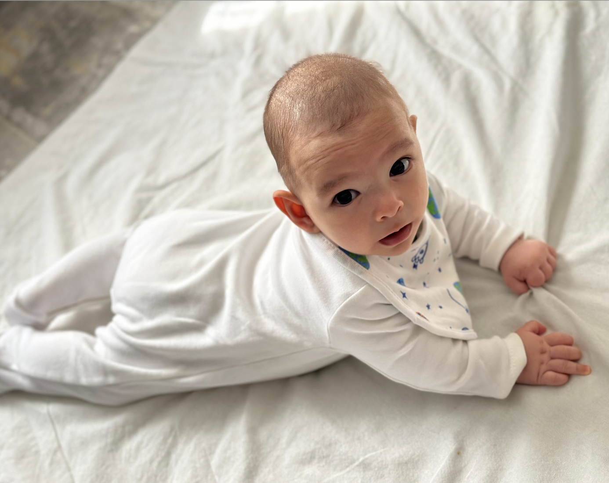

Mahmut ÇİVİCİOĞLU

Özet
Hafif raylı sistemlerde Sinyalizasyon ve Haberleşme Formeni olarak görev
yapmaktayım.
İş Deneyimleri
- Turkcell Superoline
Eki 2012 - May 2016
- Fiber Optik kablo eki.
- Switch konfigürasyonu.
- Yeni tesis kurulumu ve arıza tespit.
- İzmir Metro A.Ş.
May 2016 - Devam ediyor.
- Sinyalizasyon sistemlerinin bakım onarımı.
- Haberleşme sistemlerin bakım onarımı.
- Sorumlu olduğum sistemlerde ki arızaların tespiti ve onarımı.
- Ekip yöenetimi.
- Raporlama.
Yetenekler
- MS Office : ⭑⭑⭑⭑
- Python : ⭑⭑
- Web Development : ⭑⭑
- Ekip Yönetimi : ⭑⭑⭑⭑
- Elektronik Haberleşme : ⭑⭑⭑⭑
Ödül ve Sertifikalar
- Henüz bir sertfika alınmadı.
Diğerleri